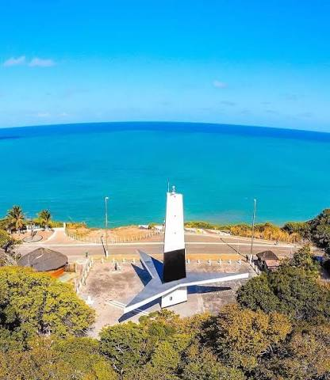
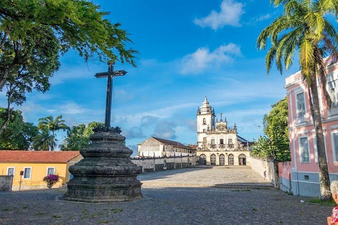
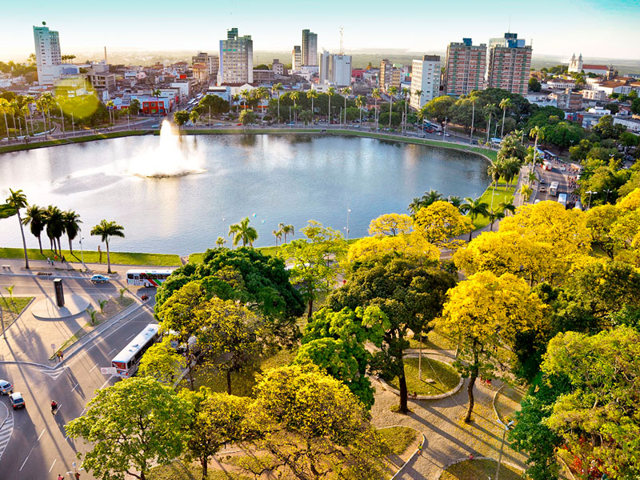

Farol do Cabo Branco
O Farol do Cabo Branco é um dos símbolos turísticos da cidade e fica próximo à Ponta do Seixas, conhecida como o ponto mais oriental das Américas.
História, cultura e paisagens que fazem parte de João Pessoa.

O Farol do Cabo Branco é um dos símbolos turísticos da cidade e fica próximo à Ponta do Seixas, conhecida como o ponto mais oriental das Américas.

Localizado no Centro Histórico, reúne importantes construções religiosas e elementos da arquitetura barroca, sendo um dos lugares históricos mais importantes da capital.

Conhecido como Lagoa, é um dos espaços públicos mais tradicionais de João Pessoa. O parque possui área arborizada e uma lagoa central.